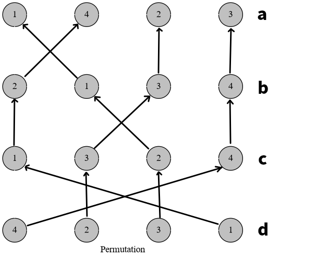
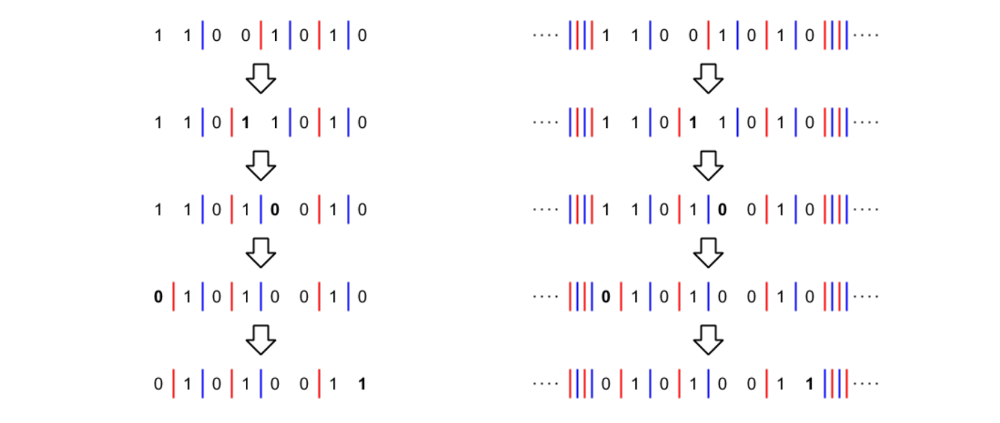
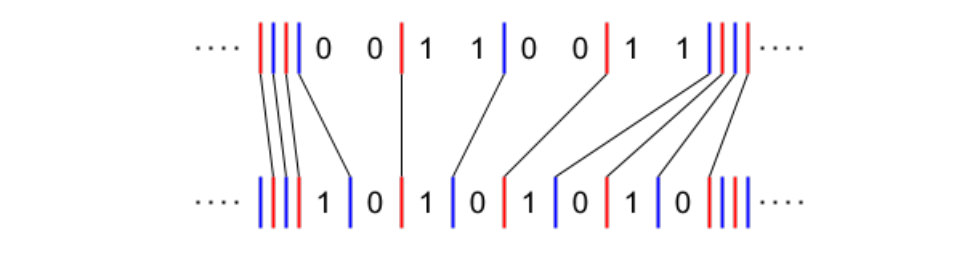

IOI2020 国家集训队作业小结 5
文章目录
AGC030 D Inversion Sum
设表示在第次操作后，大于的概率（即第个位置大于第个位置的概率）。每次我们有一半的概率执行这个操作。
转移的时候只修改的 dp 值即可，因此不需要第一维，转移的复杂度是的。
总复杂度。
AGC031 D A Sequence of Permutations
首先，我们定义两个置换的乘法运算：
那么可以发现。
另外，。置换的乘法是有结合律的。

这里是的乘法运算过程。结果为。
那么来找一些规律吧：
相信聪明的你已经找到规律了。我们把写成的形式。那么
所以有一个 6 的循环。一个在过 6 轮后会变成。第一维转化为置换的幂，然后就可以做了。
AGC030 E Less than 3
我们考虑在 10 中间放一个蓝线，01 中间放一个红线。那么我们可以把变化过程描述为线的移动过程：

当然，移动的时候有一些规则限制。但是不难证明，初始局面一定能通过合理的移动方式来得到最终局面，移动的距离是每条线移动距离的绝对值之和：

那么我们枚举第一条线和哪条匹配，然后计算总代价即可。总时间复杂度。
AGC030 F Permutation and Minimum
首先考虑分类，我们将可以分三类：、和。
对于第三类可以直接不管。对于第二类，我们可以把统一为，这样不影响答案。
对于第一类，设集合表示满足的的集合。那么我们强制所有在填完后的是单减的。算出这个方案数后乘上就是答案。
我们考虑 DP。考虑按照值域从大到小 DP，这样我们当前的数总是最小的。
设表示填了权值的数，目前剩下个天生的，个后天的的方案数。天生就是第二类，后天就是第三类填了一个数上去。
考虑数值所在的位置的二元组：
- 第三类：那么这个就是混子，。
- 第二类：那么这个可以选择新加一个天生的上去（因为它本来就是天生的），也可以选择与某个后天的合并（相当于你把放在上）。但是它不能选择新加一个后天的。因为它的命运是已经被安排的。
- 第一类：它的选择最多。它可以新加一个后天的，或者合并一个后天的，或者合并一个先天的。但是它不能新加一个先天的。因为它不是第二类。
注意，在合并后天的的时候我们不考虑它选择的是哪一个。因为我们强制了是填完后是单减的，因此它理所当然选择最考前的那个后天的。但是在合并先天的的时候我们就要考虑它的选择了，乘上一个的系数即可。
也可以用括号序列计数的方式理解这个 DP，相当于左右括号的匹配过程。时间复杂度。
AGC031 E Snuke the Phantom Thief
考虑枚举拿到的宝石数为。假设这些宝石的横坐标排序后为。对于一个限制L a b，相当于；对于R a b，相当于。纵坐标序列同理。
那么我们就可以预处理出个位置的横纵坐标的取值范围。这样就可以建模了。
- 源点连向个限制；
- 每个限制向可行的物品连边；
- 每个物品拆点为边；
- 物品连向可行的限制；
- 个限制连向汇点。
相当于把横纵坐标的限制分开处理。合理设置容量和费用后计算费用流即可。
时间复杂度。
AGC031 F Walk on Graph
考虑倒着走。相当于我们可以通过转移到。问与是否连通。
考虑到，发现的状态是一个双射。即。那么就转化为了无向图。
然后考虑到，我们可以交替走两条边使得。因此有。
那么我们把两两边权差取一个 gcd，设为。那么显然。
咕咕咕
修订记录
- 2019年12月10日 创建文章